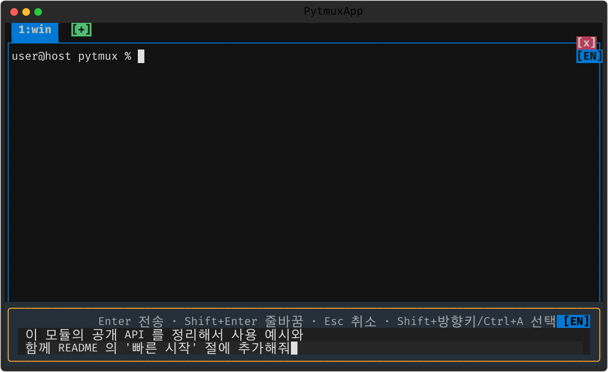
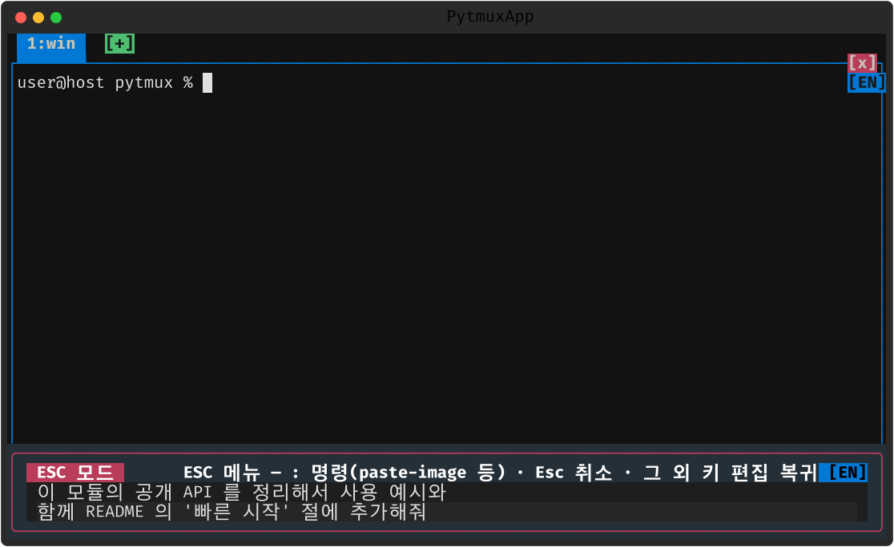

도구 · 위젯
pytmux 에 곁들여진 작은 도구들입니다. 모두 플러그인이라, 디렉토리를 지우면 그 기능만 조용히 사라집니다(14. 플러그인).
시계 · 달력
시계를 클릭하거나 prefix t(clock-mode)로 큰 시계를
패널 위에 띄웁니다. 날짜를 클릭하면(calendar-mode) 월 달력 오버레이가
열립니다 — ←→ 월, ↑↓ 년, Home 오늘. 오버레이를
클릭하거나 Shift+ESC 로 닫습니다.

ncd — 디렉토리 트리
ncd(별칭 nc)는 Norton Change Directory 스타일의 디렉토리 트리입니다. 루트→cwd
로 펼쳐지고, ↑↓ 로 이동, 글자를 입력하면 speed search, Enter 로 cd,
⇧Enter/^O 로 새 패널에서 엽니다.

IME 한/영 배지
OS 입력기 상태를 커서 근처에 [한]/[EN] 배지로 표시합니다
(ime-indicator). macOS 는 HIToolbox TIS, Windows 는 IMM, ssh 원격은 -R 에이전트
소켓을 통해 감지하는 3단계 방식입니다.

작성창(compose) · 출력 캡처(REC)
- 작성창 — ESC 모드 Insert(Insert 키가 없는 맥 키보드는 Shift+Delete)로 블록 선택 편집이 가능한 작성 버퍼를 엽니다. 여기서 다듬은 뒤 패널에 주입합니다. 붙여넣은 텍스트나 이미지 경로도 작성창이 열려 있으면 이 버퍼로 갑니다. 열 때 프롬프트에 이미 쳐 둔 내용이 있으면 여러 줄이든 그대로 따라옵니다(화면의 입력창을 그대로 읽어 옵니다 — ↑ 로 불러온 예전 프롬프트처럼 이 창에서 치지 않은 내용도 포함). 적용(Ctrl+S) 시 원래 프롬프트는 비우고 작성한 내용을 통째로 넣으며, Esc 로 취소하면 프롬프트는 그대로 남습니다.
- 작성창 안의 ESC 모드 — 작성창에서 Esc 를 한 번 누르면 취소가 아니라 ESC 모드로 들어갑니다.
들어간 것은 눈에 보입니다 — 박스 왼쪽 위에 ESC 모드 배지가 켜지고 테두리 색이 바뀝니다.
이어서 : 를 누르면 명령 입력칸이 열리는데(
paste-image등), 이때 작성창은 아래에 그대로 남고 명령칸과 힌트가 그 위쪽에 뜹니다 — 작성 중이던 내용을 보면서 명령을 고르라는 뜻입니다. 명령이 끝나면 작성창으로 돌아갑니다. Esc 를 한 번 더 누르면 취소, 그 밖의 키는 모드만 빠지고 편집으로 돌아갑니다. - 출력 캡처(REC) —
capture-output(capture-toggle [on|off], 기본 off)로 패널의 원시 PTY 출력을 무손실로 파일에 남겨, 나중에 replay 로 복원할 수 있습니다.


Perforce CL 목록
p4changes(별칭 submitted, 인자 N 기본 50)로 서브밋된 Perforce
변경 목록을 훑고(↑↓ 스크롤), Enter 로 describe 상세를 봅니다
(p4 서버 컨텍스트 필요).